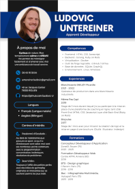

À propos de moi:
Passionné par la programmation, je combine patience et rigueur pour relever des défis créatifs. Fort de deux ans de formation intensive à Zone01, je m'investis dans des projets qui allient performance et impact. Je suis toujours à la recherche de nouvelles opportunités pour apprendre et partager mes connaissances.
